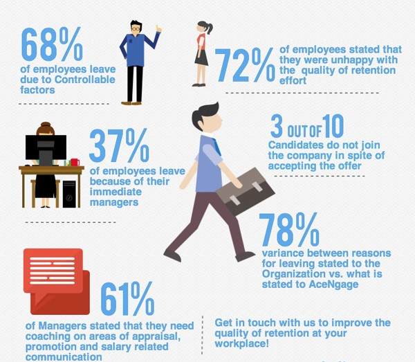
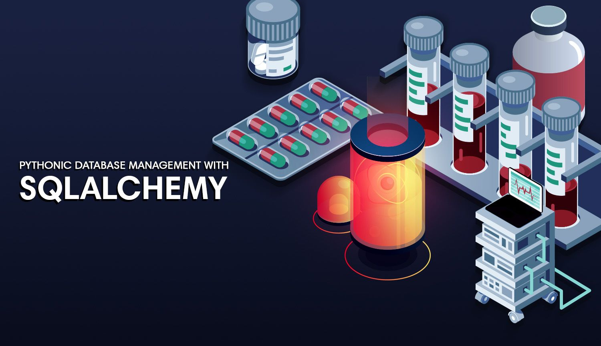
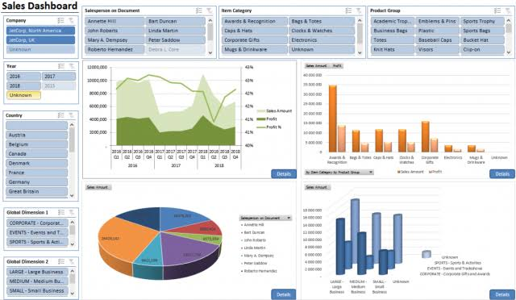

In this project, data cleaning, exploration and predictive analysis was carried out on a set of Employee data.
Some machine learning algorithms were implemented to forecast the ones with the most likelihood of attriting.


But In this project, I used SQLAlchemy, a library that makes it pretty easy to connect to SQL/ORM database in python. I used it with SQLite.
Note that SQLAchemy can be used with other database engines such as SQLite, MySQL, and PostgreSQL.
Data cleaning, exploration and prediction using bank's customer datasets.
Predicting applicants' qualification for a loan. Furthermore, the model was deployed through an API using Python and flask framework.
I imported the spredsheet of covid_19 data from excel which can be a tricky task if you don't know how to go about it. I then performed some data exploration on Covid_19 data using SQL.

In this project, I analyzed the profiles of certain customers that bought bikes from different regions using pivot charts.

Data modelling on an IT company's actual spend, budget spend and forecast data by creating tables and linking them using primary and secondary keys, performing some operations using some DAX formulae and then visualizing the data.

In this API project, I the requested for the most starred project on github as at the time of writing this.
This kind of request is called an API call.
The data is returned in JSON format and a visualization was done to show the number of stars on each github project.

In this project, I used the KMeans clustering algorithm to cluster Universities into two groups, i.e Private and Public.